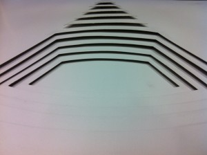

von Christian Pietschmann | Hilla Herzog | Hasbi Adenan | Lion Schramm
Idee :
Die Idee ist die Rodschenko-Kunst auf modern Kunstform zu gestalten.
als Inspiration benutzen wir ein Bild von Rodtschenko :

Das Bild ensteht von Kreisen und Linie. diese Elemente soll frei bewegen und haben wir uns am Ende entschieden, dass die Animation von Kreisen statisch und die Linie abhängig von Leute sein soll.
Wir haben das Skluptur auf Papier gebaut und dieses Skultur besteht aus verschiedene Layer bzw Stufen. Wenn man mit Projektor beleuchtet, gibt dann am ende eine ähnliche Effekt vom Schwarzfullen und Linie wie in das Rodtschenko-Bild
Technische Umsetzung :
Wir haben Processing für die Animation und Kinect + SimpleOpenNI für die Interaction benutzt.
Das gesamte Projekt wurde in Java Programmiert. Kinect mit Simple OpenNI benutzen wir als library in das projekt
Ausserdem benutzen wir auch in das Projekt das Maskingtools um Masking bilder für Animation-grenze und Positionen zu erzeugen
Als Animation haben wir Kreisen von 3 verschiedene Punkte, die immer vergroßt werden. jede punkt beinhaltet 5 Kreisen und hat verschiedene (zufällige) Anfang-Große.
Wenn die Animation zusammen geführt werden, werden die Kreisen (Zufällige-)Schnitte bilden. Diese Schnit werden später mit Schwarzefüllung gefüllt.
Für das Algorithm beim Schwarzefüllung wie in Rodscthenkobild haben wir gleiche Alrgoithm wie in Floodfilling gesetzt. Nach dem Kreise Animation wird gesamte Animation zu Pixel-Bilder umgewandelt. Danach holt das Algorithm Statische-Punkte und mit diese Punkte prüft das Algortihm, ob die Umgebung von die Punkte bereits Schwarz sind, falls nicht dann seine Bereich Schwarz einfarben (und arbeiten das Program weiter in schleifen bis keine Punkt in Pixel-bereich Weiss ist)
Als Interaction benutzen wir Linie von Rodtschenko Bild. Das Linie entspricht Personen (und seine Position), die von dem Kinect erkannt werden . Das Interaction passiert nur beim links-rechts Bewegung und das Linie wird nach jede 5 Sekunde neu (zufallig) generiert.





von Florian Huchthausen, Vasilis Ikonomou und Tobias Mainusch
Abb. 1
Abb. 2

Abb. 3
Abb. 4
Abb. 5

Werdegang:
Modelldesign
Von Anfang an hatten wir die Idee eine aus mehreren einzelnen Teilen bestehende Skulptur zu verwenden. Die Teile sollten dabei als ganzes eine Art Kreis, bzw. Spirale bilden, wie in den Abb. 1-3 zu sehen. In den Abb. 4-5 ist unser vorläufiges Modell zu sehen. Abb. 4 zeigt den Mapping-Vorgang für die Maske und Abb. 5 unsere Projektion.
Unsere endgültige Skulptur soll um einiges größer werden (ca 1,50 – 2 Meter). Außerdem soll sie mehr kreis- bzw. spiralförmig aufgebaut sein.
Wir haben diverse Materialen als Projektionsebene getestet (Papier, Plexiglass, Alufolie) und sind zu dem Schluss gekommen zerknitterte Alufolie zu verwenden, da diese passende Reflexionseffekte hervorruft (Abb. 6).
Projektionsdesign
Zunächst wollten wir darauf dann ein Video projezieren auf dem bspw. eine Fahrradfahrt aus der Ego-Perspektive zu sehen ist. Wenn man dichter an die Skulptur herangeht, sollte sich das Video schneller abspielen bzw der Anschein erweckt werden, dass man sich auf dem Fahrrad schneller bewegt. Aufgrund von Performance-Schwierigkeiten bei der Live-Video-Manipulation mussten wir allerdings diese Idee verwerfen.
Jetzt verwenden wir eine spiralförmige Animation, die aus einzelnen Punkten besteht. Wenn man sich auf die Skulptur zu bewegt, kommt die Spirale auf einen zu (eine Art Zoom-Effekt) und die Drehgeschwindigkeit wird erhöht,. Damit soll das Gefühl erzeugt werden, als würde man in die Spirale hinein “gesaugt” werden.
Technische Details
Für die Umsetzung wurden die Bibliotheken von Processing und SimpleOpenNI verwendet; der gesamte Projektcode wurde in Java programmiert. Die verwendeten Bibliotheken ermöglichen die Verbindung zur Microsoft Kinect, mit der die Entfernung des Betrachters zur Skulptur anhand des Tiefenbildes der Kinect ermittelt wird.
Die erzeugte Animation besteht aus einer spiralförmigen Anordnung von weißen Kreisen, die abhängig von der zuvor ermittelten Entfernung des Betrachters rotiert sowie gezoomt wird. Das Programm bietet zusätzlich die Option, eine Sounddatei einzubinden und abzuspielen, die relativ zur berechneten Entfernung in ihrer Lautstärke modifiziert wird. Nähert sich der Betrachter dem Objekt, wird somit die Lautstärke erhöht, entfernt er sich andererseits, verringert sich diese.
Technische Details
Die Technische Umsetzung erfolgte mit Hilfe von Processing (processing.org) und SimpleOpenNI (openni.org) als Schnittstelle zur Microsoft Kinect. Das Grunddreieck wird mit Hilfe von einfachen Linien gezeichnet und bleibt fix kann aber durch das Verändern der Höhen- und Breitenvariablen angepasst werden. Die Bewegung der Linien ist in einzelne Methoden ausgelagert und erfolgt in Abhängigkeit von der mittleren Entfernung des Tiefenbildes, welches die Kinect liefert.
Für die Ermittlung der Entfernung werden alle Pixel des Tiefenbildes, die die einzelnen Entfernungen beinhalten, aufsummiert und durch die Anzahl der Pixel geteilt. Es werden einzelne Methoden für bestimmte Bewegungen in Abhängigkeit von der mittleren Entfernung aufgerufen. Die gesamte Bewegung ist in 4 Teilbewegungen aufgeteilt, die jeweils der Reihe nach aufgerufen werden. Wenn eine Bewegung zu Ende ist, wird mit Hilfe von Flags die nächste Bewegung eingeleitet.
Das Zeichnen der Linien und deren Bewegung erfolgt von/zu jeder Seite des Dreiecks von dem Mittelpunkt ausgehend. In jeder Bewegung sind sechs Linien beteiligt, die durch das Verändern deren X/Y Koordinaten manipuliert werden. Die Verfeinerung der Struktur erfolgt symmetrisch von der Mitte zu den Enden des Dreiecks, dabei werden nach dem gleichen Prinzip jeweils kleinere Dreiecke erstellt.
von Milena Dreier, Tobias Meurer und Christo Papanouskas
Grundidee
Die Idee ist es, dem Besucher die Möglichkeit zu geben, den Raum der ihn umgibt vollkommen neu zu gestalten. Durch die Reflektion von Licht auf verschiedenen Oberflächen bekommt man ein vollkommen anderes Raumgefühl. Man hat vor und um sich diesen surrealen und gewollt leblosen Raum, in dessen Mitte dieser kubistische Monolith steht. Alles wartet nur darauf, durch Bewegung belebt zu werden.
Konzept
Wir haben ein System aus mehreren Kinects und Beamern, die einen Monolithen aus verschiedenen Materialien beleuchten. Die Farbflächen reagieren auf Bewegung und schaffen so ein eigenes Farb- und Formklima.
Der Monolith ist ca. 2,50 Meter hoch und besteht aus einem Rohrgerüst. Die Flächen bestehen aus Papier.
Technische Umsetzung
Unser gesamtes Projekt ist mit Java 1.7 implementiert.
Zur grafischen Darstellung verwenden wir die Processing 2 Bibliothek. Die Ansteuerung der Kinect erfolgt mit Hilfe von SimpleOpenNI.
Die einzelnen Flächen des Monolithen können auf Code-Basis einzeln angesprochen werden, sodass jeder Fläche eine eigene Farbe zugewiesen werden kann. Das Programm setzt die Bewegungen des Benutzers in sich verändernde Farben um.
Ausstellungen
Impressionen
-

-
3D-Modell (Gitter)
-

-
3D-Modell (Flächen)
-

-
Prototyp (Rahmen)
-

-
Prototyp (Projektion auf Flächen)
-

-
Projetion auf Monitor
-

-
Surreale Kausalität im Bucerius Kunst Forum